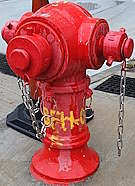
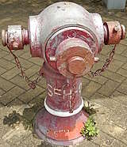
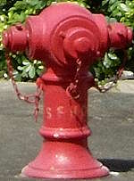
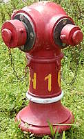
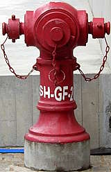
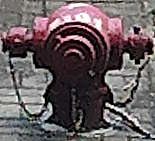

Fire Hydrant number
[Sources for this page]Sources for this page
- Google | Google Maps (Street View) | https://www.google.com/maps/
- Lands Department (HKSAR Government) | GeoInfo Map | https://www.map.gov.hk/gm/map/ | I learnt about this source from snowshine12345 https://www.discuss.com.hk/viewthread.php?tid=29167296&page=1#pid520626555
- Waterworks Office (British Hong Kong), Y1972-M04 to Y1975-M03 | HKRS287-1-683 Fire Hydrant - Island - Records of Installation, Removals, Changes of Position or Type | Public Records Office, Government Records Service (HKSAR Government)
As much as I want to talk about the details, I simply don't know how hydrant numbers are decided, but I would like to share some of my observations about hydrant numbers.
Different hydrants can share the same hydrant number
When looking at the four or five-digit hydrant numbers, you might think, those hydrant numbers must be unique and only refer to one hydrant! After all, if there are thousands if not tens of thousands of numbers, there is no reason to reuse a number!
While I am yet to encounter hydrants sharing a five-digit hydrant number, there are many examples of one to four-digit hydrant numbers being shared by multiple hydrants. Here are some examples based on a simple search in GeoInfo Map: there are seventy one 1, six 69, three 450, and three 1545. GeoInfo Map is known for not updating their hydrant information in a timely manner, and the search result can show the old number of a hydrant that had been renumbered (for instance, at least three 69 had been renumbered). Next time you see a 1, don't get too excited, you are not looking at the OG hydrant.
 |
| Red Round Head SFH-01 |
| Tai Tam Reservoir Road outside Hong Kong International School |
| Photo taken in Y2026-M07 |
 |
| Red Round Head SFH-01 |
| Chui Kwan Drive, Tung Chung |
| Photo taken in Y2026-M06 |
 |
| Red (pale) Round Head SFH-01 |
| Junk Bay Chinese Permanent Cemetery section A39 columnbarium "崇孝樓" |
| Photo taken in Y2026-M07 |
The introduction of five-digit hydrant number and the renumbering of hydrants
In the past few years, some hydrants have been renumbered to have five-digit hydrant numbers. I believe the renumbering started happening in late 2022 (based on Google Map street view captures) but I am not sure. For example, eighteen out of twenty extant "Octagonal hydrants" still in service had been renumbered, they previously had two or three-digit hydrant numbers. All extant Heavy Draw-off hydrants still in service have also been renumbered, they previously had one to two-digit hydrant numbers. Some renumbered hydrants are still marked with their old number in GeoInfo Map, such as the "viaduct hydrants" on Ap Lei Chau Bridge which previously had four-digit hydrant numbers and they now have five-digit numbers, but GeoInfo Map has not been updated to reflect this.
| ||
| red Round Head 5895, which was later renumbered 23251, photographed before and after renumbering | ||
| Wing Shun Street opposite of Wing Tak Street | ||
| Photos taken in Y2022-M01 and Y2026-M03 respectively |

I think five-digit numbers that start with 1 and 2 are only found in New Territories and Kowloon area while those with numbers that start with 3 are only found on Hong Kong Island, Lantau Island, and possibly other smaller islands. However, this is just speaking from my observations, there might be exceptions (I have not been to many of the smaller islands).
While I made it sound like the renumbering of hydrants only happened during the introduction of five-digit hydrant numbers, that is not the case. At least one of the Double Head Swan Necks with extended nozzles, which was numbered 277 when it was installed in 1972, had been renumbered 1037 at some point. 1037 still exists now, it is located at the edge of the north-bound lanes of Canal Road Flyover at Tunnel Approach Rest Garden.
The "numbers" with prefix and suffix
Hydrants we see on the street usually have the normal one to five-digit hydrant numbers, but it gets interesting in other places.
In public hosing estates, you might see hydrants with numbers with a E prefix, followed by the first letter of each word of the estate's name, then the number. ETWH 5 at Tai Wo Hau Estate is an example of this. You might also see variants with the first two letters of a word, such as ECHH-012 at Ching Ho Estate.
SFH is a common prefix, I think it stands for street fire hydrant. You can find fifthteen SFH01 and fourteen of SFH-01 in GeoInfo Map (yes, they are different). GeoInfo Map may not show all hydrants, SFH prefix numbered hydrants are no exception. A good example are the three AVK Model 2700 hydrants in Po Shek Wu Estate: SFH 01, SFH 02, and SFH 03 respectively. They have hydrant number and ⮜ arrow head markings, yet they are not shown in GeoInfo Map. And yes, there are SFH prefix numbers with no space, with space, and with hythen. GeoInfo Map can often be seen showing slightly incorrect markings by omitting spaces for these SFH prefix markings.
 |
| Red Round Head SFH07 (no space) |
| approximately 140m southwest of the Western Harbour Tunnel bus interchange |
| Photo taken in Y2026-M08 |
 |
| red AVK Model 2700 SFH 01 (with space) |
| outside Shan Wu House in Po Shek Wu Estate |
| Photo taken in Y2026-M05 |
| Red Round Head SFH-01 (with hyphen) |
| Tai Tam Reservoir Road outside Hong Kong International School |
| Photo taken in Y2026-M07 |
FH is another prefix being used. For example, hydrants in the West Kowloon Art Park, Queen's Hill Estate, and Shan Lai Court have FH prefix.
 |
| red Round Head FH16 with white band painted on the hydrant and unpainted connector piece |
| opposite of 852 Convenience Store in Art Park |
| Photo taken in Y2026-M08 |
All the ones I mentioned above are just some common prefixes, there are many many many more out there. If you are wondering what I mean, take a look at hydrant numbers in Discovery Bay in GeoInfo Map...hydrants at different housing estates have their own prefix. And this is just one small area.
Hydrants numbers that are slightly complicated
If you think all that is confusing, let me show you something: hydrant numbers with decimals! For some reason, there are three AVK Model 2700 on the Tsing Long Highway with numbers that have decimals: 5.1A, 5.1B, and 5.2A. There might also be a 6.1A but since it is obstructed by the roadlane barrier I can't see if the decimal dot is there or not so it might just be 61A. Are there more? I don't know, but I will not be surprised if there are.
There are also hydrants numbers with two hyphens, because one abbreviated term obviously isn't enough. For example, there are four Round Heads at the M+ museum area with hydrant number prefix SH-, followed by the floor (GF for ground floor and B1 for the floor below ground floor but still outdoors), then number. I believe SH means street hydrants, as some Round Heads in Art Park, which is also in the general area, have stickers that say "Street Hydrant".
 |
| red Round Head SH-GF-2 |
| outside M+ Conservation and Storage Facility |
| Photo taken in Y2026-M08 |
Hydrants numbers painted on top of the hydrant
WSD 1.34's graphics showed the numbers being painted on the hydrants' body, but it didn't stipulate that clearly. I managed to spot one half-buried Round Head that have its hydrant number painted on top.
 |
| a low quality photo of red Round Head 7181, which has its hydrant number painted on top |
| Nga Cheung Road next to Western Harbour Crossing bus interchange |
| Photo taken in Y2026-M08 |